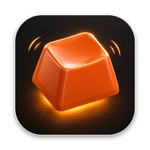

Clackers
Mechanical keyboard sounds for your Mac
Clackers plays real recordings of mechanical switches and typewriters every time you press a key, in any app. It lives in the menu bar, keeps left keys on the left and right keys on the right, and goes quiet by itself when you are on a call.
Support
Questions, bugs or ideas: email admin@stackedboost.com. You get an answer from the developer, usually within two working days.
Common questions
- Why does Clackers need Input Monitoring?
- To know the moment a key goes down, so it can play a sound. It only uses which key it was (to place the sound left or right and give the space bar and Return a deeper sound). It never records, stores or sends what you type.
- I allowed Input Monitoring but hear nothing.
- Open System Settings, Privacy & Security, Input Monitoring, and check that Clackers is turned on. If macOS asks, choose Quit & Reopen. Also check that the switch at the top of the Clackers panel is on and the volume slider is not at the far left.
- Will people on my call hear the clicks?
- No. With "Pause during calls" on (the default), Clackers goes quiet while any app uses your microphone: Zoom, Teams, FaceTime, a voice memo. It does not listen to the microphone. It only checks whether another app is using it.
- Can I keep it quiet in some apps?
- Yes. Open Settings from the Clackers panel and add the apps under "Stay quiet in these apps".
- Can it start when I log in?
- Yes. Turn on "Open Clackers when you log in" in Settings.
- What is in Clackers Pro?
- Blue and Silk are free. Clackers Pro unlocks every sound pack, including both typewriters, and every pack added later. One payment, no subscription.
- How do I restore Clackers Pro on another Mac?
- Click any locked keycap in the Clackers panel, then Restore Purchase, with the same Apple Account you bought it with.